Equations
If you are using NESSY, please cite the following article:
Automated NMR relaxation dispersion data analysis using NESSY, M. Bieri and P. Gooley, BMC Bioinformatics 2011, 12:421
Equations
Effective transverse relaxation rate R2eff:
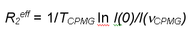
Model 1: No exchange
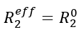
Model 2: 2 state, fast exchange (Meiboom equation)
Luz Z, Meiboom S (1963) Nuclear magnetic resonance study of proteolysis of trimethylammonium ion in aqueous solution - order of reaction with respect to solvent. Journal of Chemical Physics 39 (2):366
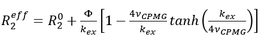
with:
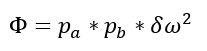
Model 3: 2 state, slow exchange (Richard-Carver equation)
Carver JP, Richards RE (1972) General 2-site solution for chemical exchange produced dependence of T2 upon Carr-Purcell pulse separation. Journal of Magnetic Resonance 6 (1):89
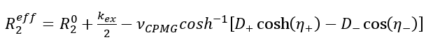
with:
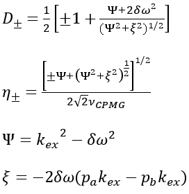
Model 4: 3 state, fast exchange
O'Connell NE, Grey MJ, Tang Y, Kosuri P, Miloushev VZ, Raleigh DP, Palmer AG, 3rd (2009) Partially folded equilibrium intermediate of the villin headpiece HP67 defined by 13C relaxation dispersion. J Biomol NMR 45 (1-2):85-98
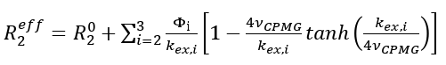
with:
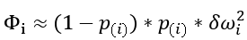
Model 5: 3 state, slow exchange
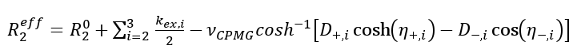
with:
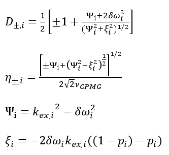
n-State:
Two n-state models are included: fast and slow exchange (as models 4 and 5, but unlimited i)
Curvefit:
Curvefit of individual models to experimental effective transversal relaxation rates is performed using the Levenberg-Marquardt algorithm of sum of least squares by minimising the following target function:
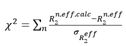
Error of data:
Error R2(i,eff,fit) of R2eff were assumed to be constant within each residue and calculated according to the definition of pooled variance. The standard error for the effective transversal relaxation rate constant σ(R2eff ) is calculated using Ndup replicated experiments for vCPMG values, such that n(j) replicates were obtained at (vCPMG)j. The effective transverseal relaxation rate of a given peak R2eff in these n(j) replicates has the standard deviation sj:
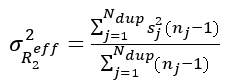
Conformational /chemical exchange rate:
Millet O, Loria JP, Kroenke CD, Pons M, Palmer AG (2000) The static magnetic field dependence of chemical exchange linebroadening defines the NMR chemical shift time scale. Journal of the American Chemical Society 122 (12):2867-2877
Fast exchange:
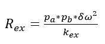
Slow exchange:
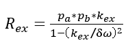
|